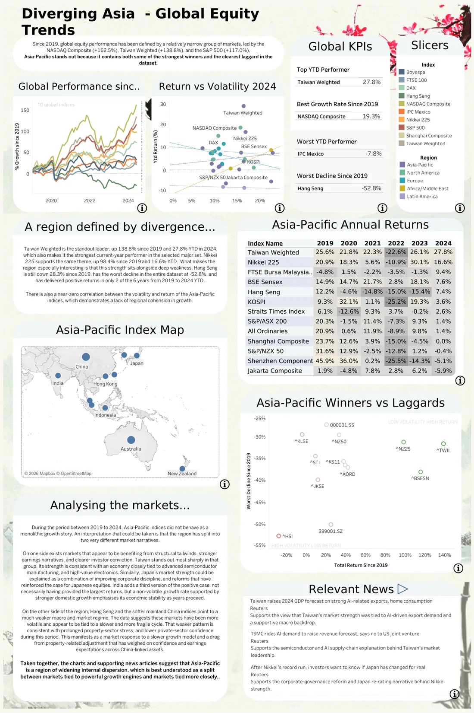

Global equity indices
A Tableau dashboard on how Asia-Pacific markets split apart after 2019
- What
- Tableau Public dashboard
- Data
- Major indices, 2019 to June 2024
- Built with
- Tableau
- When
- 2026
Open the live dashboardRepository

What it's for
I wanted one page that answers a simple question: how have the world's major stock markets done since 2019, how bumpy was the ride, and who is leading this year? The dashboard ended up being mostly about Asia-Pacific, because that's where the markets split apart most.
Choices I made
- Three views on one screen. Performance since 2019 (indexed to 100), 2024 return against volatility, and a table of annual returns by market. Each one answers a single question.
- Two scopes, labelled. The long-run chart and table use ten headline indices so they stay readable. The scatter uses a wider set. The dashboard says so, so nobody mixes them up.
- Defined KPIs. Top and bottom performer this year, best growth since 2019 and deepest fall, each with an exact meaning.
- Written analysis with its caveats. The main points are written out next to the charts, along with what the data can't tell you.
What it showed (to 24 June 2024)
Taiwan's index led the year. The NASDAQ Composite grew the most since 2019. Hang Seng had the deepest fall of the headline indices, and Latin American markets lagged in 2024.
What I'd change
The hard part was deciding what to leave out, not Tableau itself. Next time I'd show it to two or three people before finishing, the same way I'd test requirements with users.
Built with: Tableau, Data preparation, Dashboard design.
Next: Polymer structure search, research code from a summer at Cambridge.